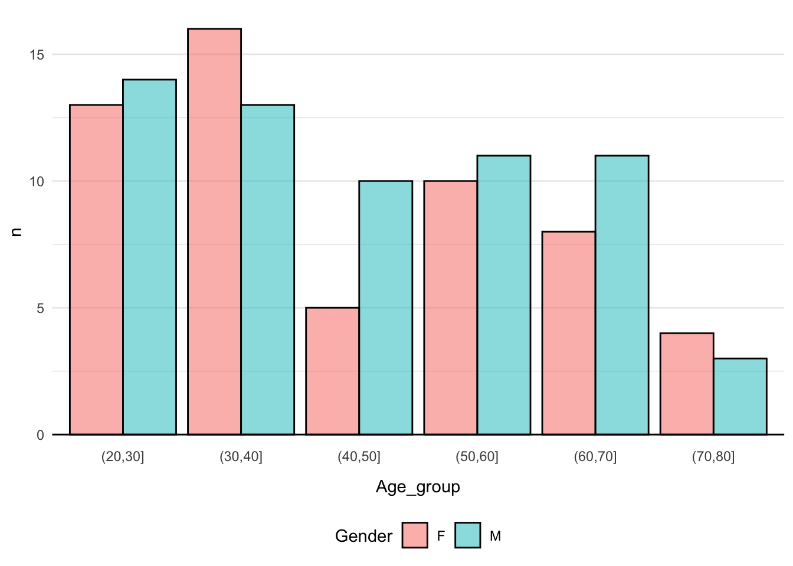

Unless explicitly stated, do not do the per-chapter exercises in the R4DS2e book
Learning Objectives
A student who has met the objectives of the session will be able to:
Understand and apply the various str_*() functions for string manipulation
Understand and apply the family of *_join() functions for combining data sets
Understand and apply pivot_wider() and pivot_longer()
Use factors in context with plotting categorical data using ggplot
Exercises
Prologue
Today will not be easy! But please try to remember Hadley’s words of advice:
“The bad news is, whenever you’re learning a new tool, for a long time, you’re going to suck! It’s gonna be very frustrating! But the good news is that that is typical and something that happens to everyone and it’s only temporary! Unfortunately, there is no way to going from knowing nothing about the subject to knowing something about a subject and being an expert in it without going through a period of great frustration and much suckiness! Keep pushing through!” - H. Wickham (dplyr tutorial at useR 2014, 4:10 - 4:48)
Intro
We are upping the game here, so expect to get stuck at some of the questions. Remember - Discuss with your group how to solve the task, revisit the materials you prepared for today and naturally, the TAs and I are happy to nudge you in the right direction. Finally, remember… Have fun!
Remember what you have worked on so far:
RStudio
Quarto
ggplot
filter
arrange
select
mutate
group_by
summarise
The pipe and creating pipelines
stringr
joining data
pivoting data
That’s quite a lot! Well done - You’ve come quite far already! Remember to think about the above tools in the following as we will synthesise your learnings so far into an analysis!
Background
In the early 20s, the world was hit by the coronavirus disease 2019 (COVID-19) pandemic. The pandemic was caused by severe acute respiratory syndrome coronavirus 2 (SARS-CoV-2). In Denmark, the virus first confirmed case was on 27 February 2020.
While initially very little was known about the SARS-CoV-2 virus, we did know the general pathology of vira. Briefly, the virus invades the cells and hijacks the intra-cellular machinery. Using the hijacked machinery, components for new virus particles are produced, eventually being packed into the viral envelope and released from the infected cell. Some of these components, viral proteins, is broken down into smaller fragments called peptides by the proteasome. These peptides are transported into the endoplasmic reticulum by the Transporter Associated with antigen Processing (TAP) protein complex. Here, they are aided by chaperones bound to the Major Histocompatilibty Complex class I (MHC-I) and then across the Golgi apparatus they finally get displayed on the surface of the cells. Note, in humans, MHC is also called Human Leukocyte Antigen (HLA) and represents the most diverse genes. Each of us have a total of 6 HLA-alleles, 3 from the maternal and 3 from the paternal side. These are further divided into 3 classes HLA-A, HLA-B and HLA-C and the combination of these constitute the HLA-haplotype for an individual. Once the peptide is bound to the MHC class I at the cell surface and exposed, the MHC-I peptide complex can be recognised by CD8+ Cytotoxic T-Lymphocytes (CTLs) via the T-cell Receptor (TCR). If a cell displays peptides of viral origin, the CTL gets activated and via a cascade induces apoptosis (programmed cell death) of the infected cell. The process is summarised in the figure below (McCarthy and Weinberg 2015).
The data we will be working with today contains data on sequenced T-cell receptors, viral antigens, HLA-haplotypes and clinical meta data for a cohort:
“A large-scale database of T-cell receptor beta (TCR\(\beta\)) sequences and binding associations from natural and synthetic exposure to SARS-CoV-2” (Nolan et al. 2020).
Your Task Today
Today, we will emulate the situation, where you are working as a Bioinformatician / Bio Data Scientist and you have been given the data and the task of answering these two burning questions:
What characterises the peptides binding to the HLAs?
What characterises T-cell Receptors binding to the pMHC-complexes?
GROUP ASSIGNMENT: Today, your assignment will be to create a micro-report on these 2 questions! (Important, see: how to)
Make sure you are in your r_for_bio_data_science project, you can verify this in the upper right corner
In the same place as your r_for_bio_data_science.Rproj file and existing data folder, create a new folder and name it doc
Go to the aforementioned manuscript. Download the PDF and upload it to your new doc folder
Open the PDF and find the link to the data
Go to the data site (Note, you may have to create and account to download, shouldn’t take too long) . Find and download the file ImmuneCODE-MIRA-Release002.1.zip (CAREFUL, do not download the superseded files)
Unpack the downloaded file
Find the files peptide-detail-ci.csv and subject-metadata.csv and compress to .zip files
Upload the compressed peptide-detail-ci.csv.zip and subject-metadata.csv.zip files to your data folder in your RStudio Cloud session
Finally, once again, create a new Quarto document for today’s exercises, containing the sections:
Background
Aim
Load Libraries
Load Data
Data Description
Analysis
Creating the Micro-Report
Background
Feel free to copy paste the one stated in the background-section above
Aim
State the aim of the micro-report, i.e. what are the questions you are addressing?
Load Libraries
Load the libraries needed
Load Data
Read the two data sets into variables peptide_data and meta_data.
Click here for hint
Think about which Tidyverse package deals with reading data and what are the file types we want to read here?
Data Description
It is customary to include a description of the data, helping the reader if the report, i.e. your stakeholder, to get an easy overview
The Subject Meta Data
Let’s take a look at the meta data:
meta_data |>slice_sample(n =10)
# A tibble: 10 × 30
Experiment Subject `Cell Type` `Target Type` Cohort Age Gender Race
<chr> <dbl> <chr> <chr> <chr> <dbl> <chr> <chr>
1 eLH44 6501 PBMC C19_cI COVID-19-Con… 61 F <NA>
2 eHO127 7143 PBMC C19_cI COVID-19-Con… 28 M <NA>
3 eHO134 178 PBMC C19_cI COVID-19-Con… 36 M White
4 eHO129 142 PBMC C19_cI COVID-19-Con… 66 F Asian
5 eMR23 1566111 PBMC C19_cI COVID-19-Con… 22 F <NA>
6 eEE224 19830 naive_CD8 C19_cI Healthy (No … 24 M White
7 eHO138 1369 PBMC C19_cI COVID-19-B-N… NA <NA> <NA>
8 eLH54 1326 PBMC C19_cI COVID-19-Con… NA <NA> <NA>
9 eAV100 1995 PBMC C19_cII COVID-19-Con… 29 F <NA>
10 eQD128 1499 PBMC C19_cI COVID-19-Con… 53 F Asian
# ℹ 22 more variables: `HLA-A...9` <chr>, `HLA-A...10` <chr>,
# `HLA-B...11` <chr>, `HLA-B...12` <chr>, `HLA-C...13` <chr>,
# `HLA-C...14` <chr>, DPA1...15 <chr>, DPA1...16 <chr>, DPB1...17 <chr>,
# DPB1...18 <chr>, DQA1...19 <chr>, DQA1...20 <chr>, DQB1...21 <chr>,
# DQB1...22 <chr>, DRB1...23 <chr>, DRB1...24 <chr>, DRB3...25 <chr>,
# DRB3...26 <chr>, DRB4...27 <chr>, DRB4...28 <chr>, DRB5...29 <chr>,
# DRB5...30 <chr>
Q1: How many observations of how many variables are in the data?
Q2: Are there groupings in the variables, i.e. do certain variables “go together” somehow?
T1: Re-create this plot
Read this first:
Think about: What is on the x-axis? What is on the y-axis? And also, it looks like we need to do some counting stratified by Cohort and Gender. Recall, that we can stick together a dplyr pipeline with a call to ggplot.
Does your plot look different somehow? Consider peeking at the hint…
Click here for hint
Perhaps not everyone agrees on how to denote NAs in data. I have seen -99, -11, _ and so on… Perhaps this can be dealt with in the instance we read the data from the file? I.e. in the actual function call to your read_csv() function. Recall, how can we get information on the parameters of a ?function
T2: Re-create this plot

Click here for hint
Perhaps there is a function, which can cut continuous observations into a set of bins?
STOP! Make sure you handled how NAs are denoted in the data before proceeding, see hint below T1
T3: Look at the data and create yet another plot as you see fit. Also skip the redundant variables Subject, Cell Type and Target Type
Now, a classic way of describing a cohort, i.e. the group of subjects used for the study, is the so-called table1 and while we could build this ourselves, this one time, in the interest of exercise focus and time, we are going to “cheat” and use an R-package, like so:
NB!: This may look a bit odd initially, but if you render your document, you should be all good!
library("table1") # <= Yes, this should normally go at the beginning!meta_data |>mutate(Gender =factor(Gender),Cohort =factor(Cohort)) |>table1(x =formula(~ Gender + Age + Race | Cohort),data = _)
COVID-19-Acute (N=4)
COVID-19-B-Non-Acute (N=8)
COVID-19-Convalescent (N=90)
COVID-19-Exposed (N=3)
Healthy (No known exposure) (N=39)
Overall (N=144)
Gender
F
1 (25.0%)
4 (50.0%)
33 (36.7%)
1 (33.3%)
17 (43.6%)
56 (38.9%)
M
2 (50.0%)
3 (37.5%)
36 (40.0%)
0 (0%)
21 (53.8%)
62 (43.1%)
Missing
1 (25.0%)
1 (12.5%)
21 (23.3%)
2 (66.7%)
1 (2.6%)
26 (18.1%)
Age
Mean (SD)
50.7 (17.0)
43.7 (7.74)
51.5 (15.3)
35.0 (NA)
33.3 (9.93)
44.9 (15.7)
Median [Min, Max]
52.0 [33.0, 67.0]
42.0 [33.0, 53.0]
53.0 [21.0, 79.0]
35.0 [35.0, 35.0]
31.0 [21.0, 62.0]
42.0 [21.0, 79.0]
Missing
1 (25.0%)
1 (12.5%)
21 (23.3%)
2 (66.7%)
0 (0%)
25 (17.4%)
Race
African American
1 (25.0%)
0 (0%)
0 (0%)
0 (0%)
1 (2.6%)
2 (1.4%)
White
2 (50.0%)
7 (87.5%)
13 (14.4%)
0 (0%)
28 (71.8%)
50 (34.7%)
Asian
0 (0%)
0 (0%)
3 (3.3%)
0 (0%)
2 (5.1%)
5 (3.5%)
Hispanic or Latino/a
0 (0%)
0 (0%)
1 (1.1%)
0 (0%)
0 (0%)
1 (0.7%)
Native Hawaiian or Other Pacific Islander
0 (0%)
0 (0%)
0 (0%)
1 (33.3%)
0 (0%)
1 (0.7%)
Black or African American
0 (0%)
0 (0%)
0 (0%)
0 (0%)
3 (7.7%)
3 (2.1%)
Mixed Race
0 (0%)
0 (0%)
0 (0%)
0 (0%)
1 (2.6%)
1 (0.7%)
Missing
1 (25.0%)
1 (12.5%)
73 (81.1%)
2 (66.7%)
4 (10.3%)
81 (56.3%)
Note how good this looks! If you have ever done a “Table 1” before, you know how painful they can be and especially if something changes in your cohort - Dynamic reporting to the rescue!
Lastly, before we proceed, the meta_data contains HLA data for both class I and class II (see background), but here we are only interested in class I, recall these are denoted HLA-A, HLA-B and HLA-C, so make sure to remove any non-class I, i.e. the one after, denoted D-something.
T4: Create a new version of the meta_data, which with respect to allele-data only contains information on class I and also fix the odd naming, e.g. HLA-A...9 becomes A1 oand HLA-A...10 becomes A2 and so on for B1, B2, C1 and C2 (Think: How can we rename variables? And here, just do it “manually” per variable). Remember to assign this new data to the same meta_data variable
Click here for hint
Which tidyverse function subsets variables? Perhaps there is a function, which somehow matches a set of variables? And perhaps for the initiated this is compatible with regular expressions (If you don’t know what this means - No worries! If you do, see if you utilise this to simplify your variable selection)
Before we proceed, this is the data we will carry on with:
meta_data |>slice_sample(n =10)
# A tibble: 10 × 11
Experiment Cohort Age Gender Race A1 A2 B1 B2 C1 C2
<chr> <chr> <dbl> <chr> <chr> <chr> <chr> <chr> <chr> <chr> <chr>
1 eXL43 Healthy (N… 36 F White "A*3… "A*3… "B*0… "B*1… "C*0… "C*0…
2 eQD112 COVID-19-C… 65 M <NA> "A*2… "A*2… "B*0… "B*3… "C*0… "C*0…
3 eJL158 COVID-19-A… 33 M White "A*0… "A*2… "B*1… "B*4… "C*0… "C*1…
4 ePD86 COVID-19-C… 58 M White "A*0… "A*2… "B*4… "B*5… "C*0… "C*1…
5 eMR14 COVID-19-C… NA <NA> <NA> "A*0… "A*2… "B*0… "B*5… "C*0… "C*0…
6 eAV100 COVID-19-C… 29 F <NA> "A*0… "A*6… "B*0… "B*4… "C*0… "C*0…
7 eHH174 Healthy (N… 31 F White "A*0… "A*0… "B*0… "B*5… "C*0… "C*1…
8 eNL192 COVID-19-C… NA <NA> <NA> "" "" "" "" "" ""
9 eLH54 COVID-19-C… NA <NA> <NA> "A*0… "A*0… "B*0… "B*4… "C*0… "C*0…
10 eJL147 Healthy (N… 40 M Mixe… "A*0… "A*1… "B*0… "B*3… "C*0… "C*0…
Now, we have a beautiful tidy dataset, recall that this entails, that each row is an observation, each column is a variable and each cell holds one value.
Q3: How many observations of how many variables are in the data?
This is a rather big data set, so let us start with two “tricks” to handle this, first:
Write the data back into your data folder, using the filename peptide-detail-ci.csv.gz, note the appending of .gz, which is automatically recognised and results in gz-compression
Now, check in your data folder, that you have two files peptide-detail-ci.csv and peptide-detail-ci.csv.gz, delete the former
Adjust your reading-the-data-code in the “Load Data”-section, to now read in the peptide-detail-ci.csv.gz file
Click here for hint
Just as you can read a file, you can of course also write a file. Note the filetype we want to write here is csv. If you in the console type e.g. readr::wr and then hit the Tab key, you will see the different functions for writing different filetypes
Then:
T5: As before, let’s immediately subset the peptide_data to the variables of interest: TCR BioIdentity, Experiment and Amino Acids. Remember to assign this new data to the same peptide_data variable to avoid cluttering your environment with redundant variables. Bonus: Did you know you can click the Environment pane and see which variables you have?
Once again, before we proceed, this is the data we will carry on with:
Click here for hint
First: Compare the two datasets and identify what happened? Did any variables “disappear” and did any “appear”? Ok, so this is a bit tricky, but perhaps there is a function to separate a composite (untidy) column into a set of new variables based on a separator? But what is a separator? Just like when you read a file with Comma Separated Values, a separator denotes how a composite string is divided into fields. So, look for such a repeated value, which seem to indeed separate such fields. Also, be aware, that character, which can mean more than one thing, may need to be “escaped” using an initial two backslashed, i.e. “\x”, where x denotes the character needing to be “escaped”
T7: Add a variable, which counts how many peptides are in each observation of Amino Acids
Click here for hint
We have been working with the stringr package, perhaps the contains a function to somehow count the number of occurrences of a given character in a string? Again, remember you can type e.g. stringr::str_ and then hit the Tab key to see relevant functions
Click here for hint
If you’re uncertain on how a function works, try going into the console and in this case e.g. type str_c("a", "b") and seq(from = 1, to = 3) and see if you combine these?
T10: Use, what you learned about separating in T6 and the vector-of-strings you created in T9 adjusted to the number from Q4 to create the below data
Click here for hint
In the console, write ?separate and think about how you used it earlier. Perhaps you can not only specify a vector to separate into, but also specify a function, which returns a vector?
Q5: Now, presumable you got a warning, discuss in your group why that is?
Q6: With respect to peptide_n, discuss in your group, if this is wide- or long-data?
Now, finally we will use the what we prepared for today, data pivoting. There are two functions, namely pivot_wider() and pivot_longer(). Also, now, we will use a trick when developing ones data pipeline, while working with new functions, that on might not be completely comfortable with. You have seen the slice_sample() function several times above and we can use that to randomly sample n observations from data. This we can utilise to work with a smaller data set in the development face and once we are ready, we can increase this n gradually to see if everything continues to work as anticipated.
T11: Using the peptide_data, run a few slice_sample() calls with varying degree of n to make sure, that you get a feeling for what is going on
T12: From the peptide_data data above, with peptide_1, peptide_2, etc. create this data set using one of the data pivoting functions. Remember to start initially with sampling a smaller data set and then work on that first! Also, once you’re sure you’re good to go, reuse the peptide_data variable as we don’t want huge redundant data sets floating around in our environment
Click here for hint
If the pivoting is not clear at all, then do what I do, create some example data:
…and then play around with that. A small set like the one above is easy to handle, so perhaps start with that and then pivot back and forth a few times using pivot_wider()/pivot_longer(). Use View() to inspect and get a better overview of the results of pivoting.
Q7: You will see some NAs in the peptide variable, discuss in your group from where these arise?
Q8: How many rows and columns now and how does this compare with Q3? Discuss why/why not it is different?
T13: Now, lose the redundant variables n_peptides and peptide_n, get rid of the NAs in the peptide column, and make sure that we only have unique observations (i.e. there are no repeated rows/observations).
Q8: Now how many rows and columns and is this data tidy? Discuss in your group why/why not?
Again, we turn to the stringr package, as we need to make sure that the sequence data does indeed only contain valid characters. There are a total of 20 proteogenic amino acids, which we symbolise using ARNDCQEGHILKMFPSTWYV.
T14: Use the str_detect() function to filter the CDR3b and peptide variables using a pattern of [^ARNDCQEGHILKMFPSTWYV] and then play with the negate parameter so see what happens
Click here for hint
Again, try to play a bit around with the function in the console, type e.g. str_detect(string = "ARND", pattern = "A") and str_detect(string = "ARND", pattern = "C") and then recall, that the filter() function requires a logical vector, i.e. a vector of TRUE and FALSE to filter the rows
T15: Add two new variables to the data, k_CDR3b and k_peptide each signifying the length of the respective sequences
Click here for hint
Again, we’re working with strings, so perhaps there is a package of interest and perhaps in that package, there is a function, which can get the length of a string?
Before we move onto using the family of *_join() functions you prepared for today, we will just take a quick peek at the meta data again:
meta_data |>slice_sample(n =10)
# A tibble: 10 × 11
Experiment Cohort Age Gender Race A1 A2 B1 B2 C1 C2
<chr> <chr> <dbl> <chr> <chr> <chr> <chr> <chr> <chr> <chr> <chr>
1 eNL192 COVID-19-C… NA <NA> <NA> "" "" "" "" "" ""
2 eMR25 COVID-19-C… 21 F <NA> "" "" "" "" "" ""
3 eXL43 Healthy (N… 36 F White "A*3… "A*3… "B*0… "B*1… "C*0… "C*0…
4 ePD91 COVID-19-C… 52 M White "" "" "" "" "" ""
5 eMR20 COVID-19-B… 37 M White "A*0… "A*2… "B*1… "B*1… "C*0… "C*0…
6 eXL27 Healthy (N… 24 M White "A*0… "A*0… "B*2… "B*4… "C*0… "C*0…
7 eQD125 COVID-19-C… 44 M <NA> "A*0… "A*1… "B*1… "B*5… "C*0… "C*0…
8 eXL31 Healthy (N… 28 M White "A*0… "A*2… "B*0… "B*4… "C*0… "C*1…
9 eQD114 COVID-19-C… 73 M <NA> "A*0… "A*2… "B*0… "B*4… "C*0… "C*1…
10 eLH50 COVID-19-C… 28 M <NA> "A*0… "A*2… "B*1… "B*2… "C*0… "C*0…
Remember you can scroll in the data.
Q12: Discuss in your group, if this data with respect to the A1, A2, B1, B2, C1 and C2 variables is a wide or a long data format?
As with the peptide_data, we will now have to use data pivoting again. I.e.:
T18: use either pivot_wider() or pivot_longer() to create the following data:
meta_data |>slice_sample(n =10)
# A tibble: 10 × 7
Experiment Cohort Age Gender Race Gene Allele
<chr> <chr> <dbl> <chr> <chr> <chr> <chr>
1 eLH58 COVID-19-Convalescent NA <NA> <NA> A2 "A*02…
2 eHH170 Healthy (No known exposure) 24 F Black or Af… A2 "A*74…
3 eHO125 COVID-19-Convalescent 52 M <NA> C2 "C*07…
4 eHO129 COVID-19-Convalescent 66 F Asian B1 "B*15…
5 eJL152 COVID-19-Convalescent 41 F <NA> C2 "C*14…
6 ePD91 COVID-19-Convalescent 52 M White A2 ""
7 eGK111 COVID-19-Convalescent 50 F <NA> C2 "C*07…
8 eMR20 COVID-19-B-Non-Acute 37 M White B1 "B*14…
9 eEE224 Healthy (No known exposure) 24 M White B2 "B*40…
10 eMR13 COVID-19-Convalescent NA <NA> <NA> A2 "A*24…
Remember, what we are aiming for here, is to create one data set from two. So:
Q13: Discuss in your group, which variable(s?) define the same observations between the peptide_data and the meta_data?
Once you have agreed upon Experiment, then use that knowledge to subset the meta_data to the variables-of-interest:
Use the View() function again, to look at the meta_data. Notice something? Some alleles are e.g. A*11:01, whereas others are B*51:01:02. You can find information on why, by visiting Nomenclature for Factors of the HLA System.
Long story short, we only want to include Field 1 (allele group) and Field 2 (Specific HLA protein). You have prepared the stringr package for today. See if you can find a way to reduce e.g. B*51:01:02 to B*51:01 and then create a new variable Allele_F_1_2 accordingly, while also removing the ...x (where x is a number) subscripts from the Gene variable (It is an artifact from having the data in a wide format, where you cannot have two variables with the same name) and also, remove any NAs and ""s, denoting empty entries.
Click here for hint
There are several ways this can be achieved, the easiest being to consider if perhaps a part of the string based on indices could be of interest. This term “a part of a string” is called a substring, perhaps the stringr package contains a function work with substring? In the console, type stringr:: and hit tab. This will display the functions available in the stringr package. Scroll down and find the functionst starting with str_ and look for on, which might be relevant and remember you can use ?function_name to get more information on how a given function works.
T19: Create the following data, according to specifications above:
T21: Create a dplyr pipeline, starting with the peptide_data, which joins it with the meta_data and remember to make sure that you get only unqiue observations of rows. Save this data into a new variable names peptide_meta_data (If you get a warning, discuss in your group what it means?)
Click here for hint 1
Which family of functions do we use to join data? Also, perhaps here it would be prudent to start with working on a smaller data set, recall we could sample a number of rows yielding a smaller development data set
Click here for hint 2
You should get a data set of around +3.000.000, take a moment to consider how that would have been to work with in Excel? Also, in case the servers are not liking this, you can consider subsetting the peptide_data prior to joining to e.g. 100,000 or 10,000 rows.
Now, that we have the data in a prepared and ready-to-analyse format, let us return to the two burning questions we had:
What characterises the peptides binding to the HLAs?
What characterises T-cell Receptors binding to the pMHC-complexes?
Peptides binding to HLA
As we have touched upon multiple times, R is very flexible and naturally you can also create sequence logos. Finally, let us create a binding motif using the package ggseqlogo (More info here).
T22: Subset the final peptide_meta_data data to A02:01 and unique observations of peptides of length 9 and re-create the below sequence logo
Click here for hint
You can pipe a vector of peptides into ggseqlogo, but perhaps you first need to pull that vector from the relevant variable in your tibble? Also, consider before that, that you’ll need to make sure, you are only looking at peptides of length 9
T23: Repeat for e.g. B07:02 or another of your favourite alleles
Now, let’s take a closer look at the sequence logo:
Q14: Which positions in the peptide determines binding to HLA?
Click here for hint
Recall your Introduction to Bioinformatics course? And/or perhaps ask your fellow group members if they know?
CDR3b-sequences binding to pMHC
T24: Subset the peptide_meta_data, such that the length of the CDR3b is 15, the allele is A02:01 and the peptide is LLFLVLIML and re-create the below sequence logo of the CDR3b sequences:
Q15: In your group, discuss what you see?
T25: Play around with other combinations of k_CDR3b, Allele, and peptide and inspect how the logo changes
Disclaimer: In this data set, we only get: A given CDR3b was found to recognise a given peptide in a given subject and that subject had a given haplotype - Something’s missing… Perhaps if you have had immunology, then you can spot it? There is a trick to get around this missing information, but that’s beyond scope of what we’re working with here.
Epilogue
That’s it for today - I know this is overwhelming now, but commit to it and you WILL be plenty rewarded! I hope today was at least a glimpse into the flexibility and capabilities of using tidyverse for applied Bio Data Science
…also, noticed something? We spend maybe 80% of the time here on dealing with data-wrangling and then once we’re good to go, the analysis wasn’t that time consuming - That’s often the way it ends up going. You’ll spend a lot of time on data handling, and getting the tidyverse toolbox in your tool belt will allow you to be so much more efficient in your data wrangling, so you can get to the fun part as quickly as possible!
Today’s Assignment
After today, we are halfway through the labs of the course, so now is a good time to spend some time recalling what we have been over and practising writing a reproducible Quarto-report.
Your group assignment today is to condense the exercises into a group micro-report! Talk together and figure out how to distil the exercises from today into one small end-to-end runnable reproducible micro-report. DO NOT include ALL of the exercises, but rather include as few steps as possible to arrive at your results. Be very concise!
But WHY? WHY are you not specifying exactly what we need to hand in? Because we are training taking independent decisions, which is crucial in applied bio data science, so take a look at the combined group code, select relevant sections and condense - If you don’t make it all the way through the exercises, then condense and present what you were able to arrive at! What do you think is central/important/indispensable? Also, these hand ins are NOT for us to evaluate you, but for you to train creating products and the get feedback on your progress!
McCarthy, Mary K., and Jason B. Weinberg. 2015. “The Immunoproteasome and Viral Infection: A Complex Regulator of Inflammation.”Frontiers in Microbiology 6 (January). https://doi.org/10.3389/fmicb.2015.00021.
Nolan, Sean, Marissa Vignali, Mark Klinger, Jennifer N. Dines, Ian M. Kaplan, Emily Svejnoha, Tracy Craft, et al. 2020. “A Large-Scale Database of t-Cell Receptor Beta (TCRβ) Sequences and Binding Associations from Natural and Synthetic Exposure to SARS-CoV-2.” August. https://doi.org/10.21203/rs.3.rs-51964/v1.